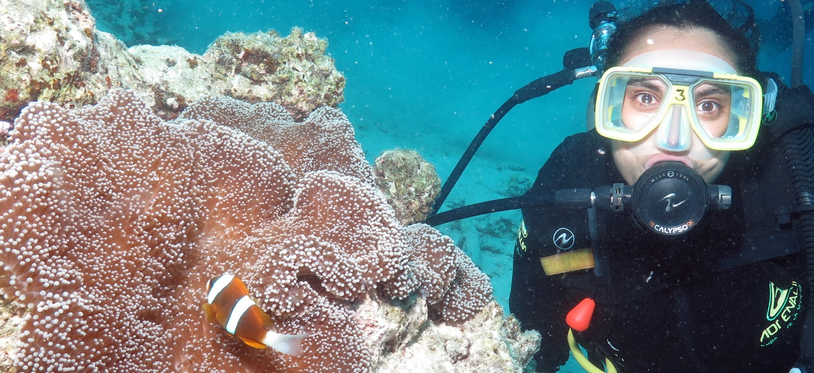

About Priya
I am a PhD Student at UC Davis in Ted Grosholz's lab studying how climate change affects shellfish aquaculture operations within the coastal ocean. I am currently a contributor for Forbes, writing about ocean and climate science. Prior to this, I received my Master's in Ecology from Matt Edwards' Lab at San Diego State University in 2015. And, I received my Bachelor's in Environmental Science and Management (with a minor in Oceanography) from UC Davis in 2011. I have also worked as an environmental consultant, a high school teacher, a policy specialist, a public educator, and a lab manager.
I am currently a California SeaGrant Graduate Research Fellow , studying whether we can induce thermal tolerance in the farmed Pacific oyster, Crassostrea gigas. I am also a National Science Foundation Research Trainee in the Sustainable Oceans Program at UC Davis. In 2019, I was a Policy Engagement Fellow and Scientist Sentinel with COMPASS Science Communication.
In addition to my research, I am a relentless advociate for diversity, equity, and inclusion. I work within academia and at its boundaries to increase the visibility of marginalized communities inside and outside of science. I am also an ardent communicator of the challenges our society must overcome to combat environmental change and social injustice. I engage locally to innovate solutions for human-driven climate change across multiple facets of society.
E-mail Address
pshukla [at] ucdavis.edu
Mailing Address
Bodega Marine Laboratory
2099 Westshore Road
Bodega BA, CA 94923
Commitment to Diversity, Equity, Inclusion, Justice & Belonging
Over the past decade, I have personally experienced the lack of diversity across the marine sciences. As an able-bodied, cis-het woman of color, I simlutaneously experience privilege and marginalization. Thus, I strive to create environments and imbue a sense of diversity, equity, inclusion, justice and belonging in all of my endeavors. Additionally, I actively work to improve the communities I am a part of to create a more welcoming and just marine science enterprise. Towards these goals, I participate in and consult on projects that aim to improve representation in this discipline; a selection are provided below:
